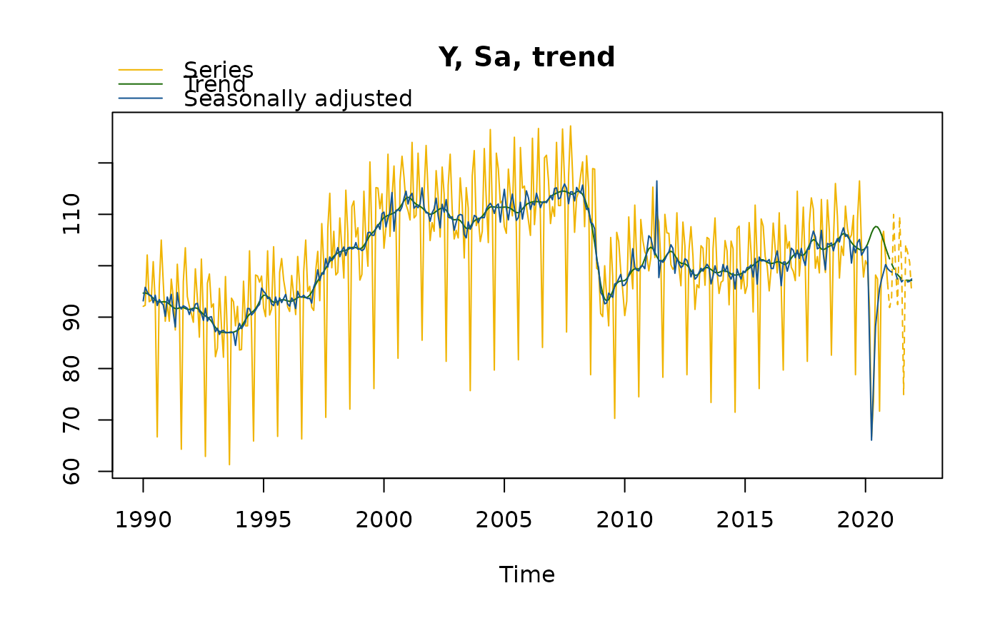
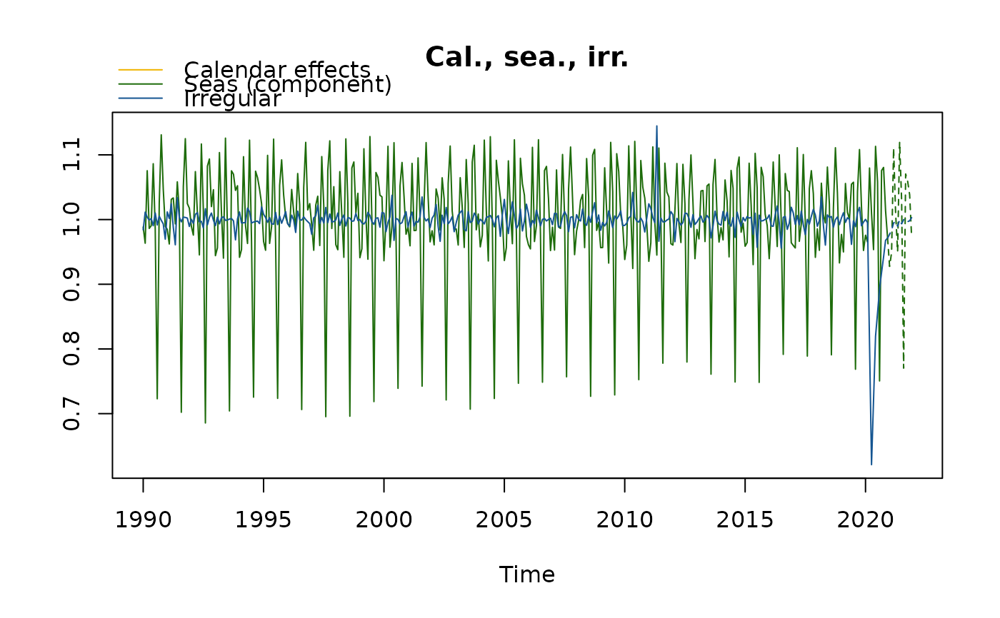
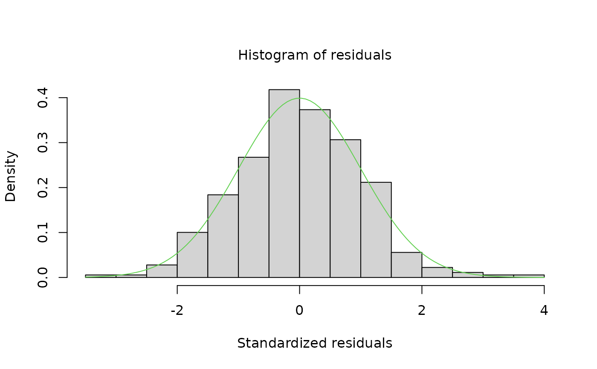
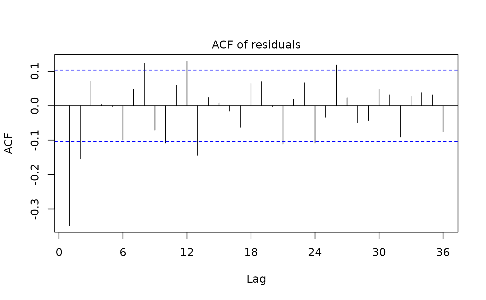
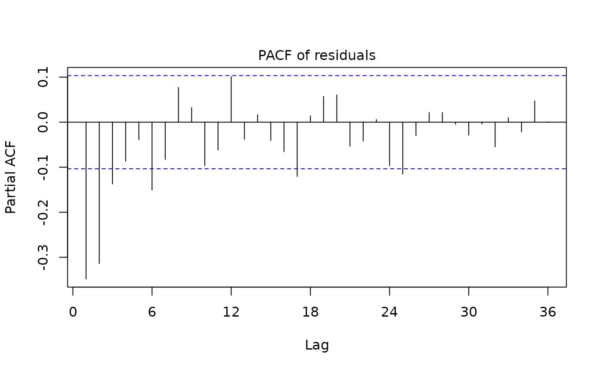
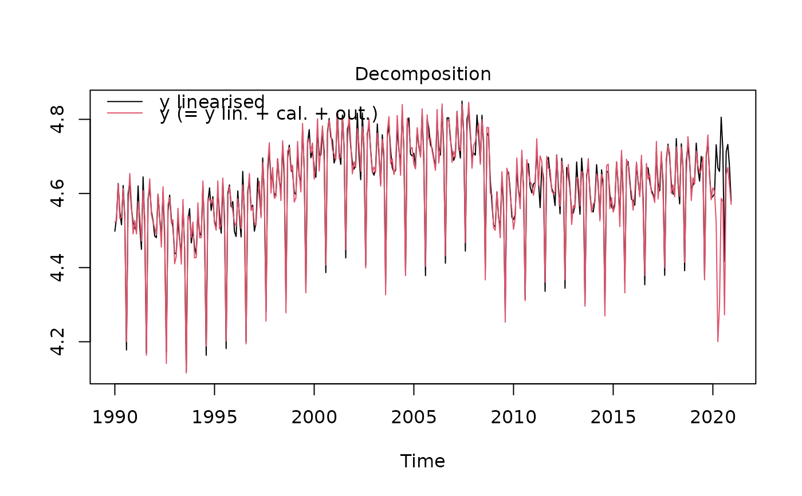
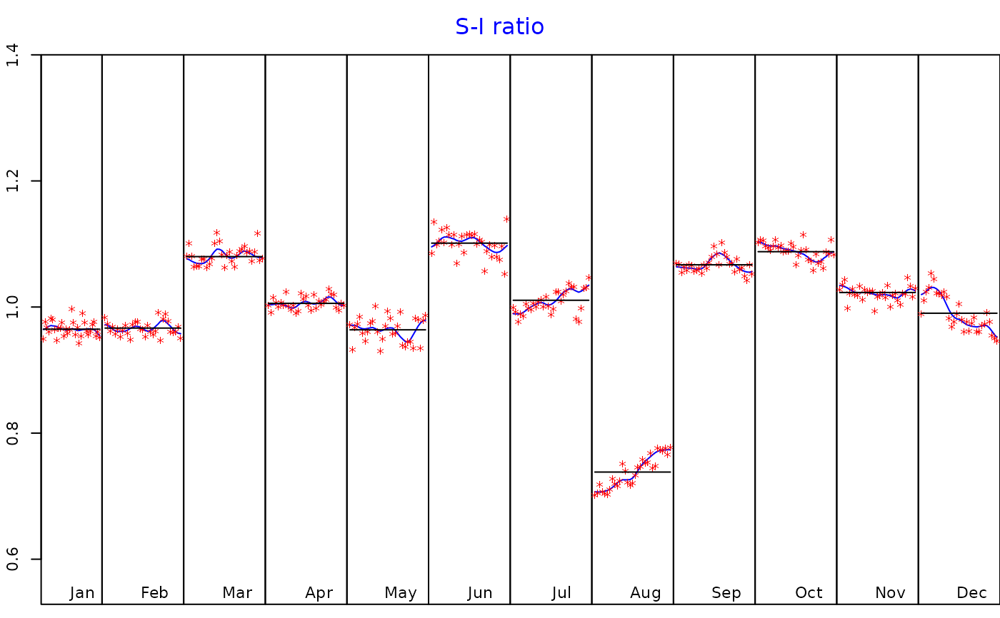

Functions to estimate the seasonally adjusted series (sa) with the X13-ARIMA method.
This is achieved by decomposing the time series (y) into the trend-cycle (t), the seasonal component (s) and the irregular component (i).
Calendar-related movements can be corrected in the pre-treatment (regarima) step.
x13 returns a preformatted result while jx13 returns the Java objects resulting from the seasonal adjustment.
Arguments
- series
an univariate time series
- spec
the x13 model specification. It can be the name (
character) of a pre-defined X13 'JDemetra+' model specification (see Details) or of a specification created with thex13_specfunction. The default value is"RSA5c".- userdefined
a
charactervector containing the additional output variables (seeuser_defined_variables).
Value
jx13 returns the result of the seasonal adjustment in a Java (jSA) object, without any formatting.
Therefore, the computation is faster than with the x13 function. The results of the seasonal adjustment can be
extracted with the function get_indicators.
x13 returns an object of class c("SA","X13"), that is, a list containing the following components:
- regarima
an object of class
c("regarima","X13"). More info in the Value section of the functionregarima.- decomposition
an object of class
"decomposition_X11", that is a six-element list:specificationa list with the X11 algorithm specification. See also the functionx13_spec.modethe decomposition modemstatsthe matrix with the M statisticssi_ratiothe time series matrix (mts) with thed8andd10seriess_filterthe seasonal filterst_filterthe trend filter
- final
an object of class
c("final","mts","ts","matrix"). The matrix contains the final results of the seasonal adjustment: the original time series (y)and its forecast (y_f), the trend (t) and its forecast (t_f), the seasonally adjusted series (sa) and its forecast (sa_f), the seasonal component (s)and its forecast (s_f), and the irregular component (i) and its forecast (i_f).- diagnostics
an object of class
"diagnostics", that is a list containing three types of tests results:variance_decompositiona data.frame with the tests results on the relative contribution of the components to the stationary portion of the variance in the original series, after the removal of the long term trend;residuals_testa data.frame with the tests results of the presence of seasonality in the residuals (including the statistic test values, the corresponding p-values and the parameters description);combined_testthe combined tests for stable seasonality in the entire series. The format is a two elements list with:tests_for_stable_seasonality, a data.frame containing the tests results (including the statistic test value, its p-value and the parameters description), andcombined_seasonality_test, the summary.
- user_defined
an object of class
"user_defined": a list containing the additional userdefined variables.
Details
The first step of a seasonal adjustment consists in pre-adjusting the time series. This is done by removing
its deterministic effects (calendar and outliers), using a regression model with ARIMA noise (RegARIMA, see: regarima).
In the second part, the pre-adjusted series is decomposed by the X11 algorithm into the following components:
trend-cycle (t), seasonal component (s) and irregular component (i). The decomposition can be:
additive (\(y = t + s + i\)) or multiplicative (\(y = t * s * i\)).
More information on the X11 algorithm at https://jdemetra-new-documentation.netlify.app/m-x11-decomposition.
The available pre-defined 'JDemetra+' X13 model specifications are described in the table below:
| Identifier | | Log/level detection | | Outliers detection | | Calendar effects | | ARIMA | RSA0 | | NA | |
| NA | | NA | | Airline(+mean) | RSA1 | | automatic | | AO/LS/TC | | NA | |
| Airline(+mean) | RSA2c | | automatic | | AO/LS/TC | | 2 td vars + Easter | | Airline(+mean) | RSA3 | |
| automatic | | AO/LS/TC | | NA | | automatic | RSA4c | | automatic | | AO/LS/TC | |
| 2 td vars + Easter | | automatic | RSA5c | | automatic | | AO/LS/TC | | 7 td vars + Easter | | automatic |
References
More information and examples related to 'JDemetra+' features in the online documentation: https://jdemetra-new-documentation.netlify.app/
Examples
# \donttest{
myseries <- ipi_c_eu[, "FR"]
mysa <- x13(myseries, spec = "RSA5c")
myspec1 <- x13_spec(mysa, tradingdays.option = "WorkingDays",
usrdef.outliersEnabled = TRUE,
usrdef.outliersType = c("LS","AO"),
usrdef.outliersDate = c("2008-10-01", "2002-01-01"),
usrdef.outliersCoef = c(36, 14),
transform.function = "None")
mysa1 <- x13(myseries, myspec1)
mysa1
#> RegARIMA
#> y = regression model + arima (2, 1, 1, 0, 1, 1)
#> Log-transformation: no
#> Coefficients:
#> Estimate Std. Error
#> Phi(1) 0.07097 0.113
#> Phi(2) 0.18458 0.076
#> Theta(1) -0.49960 0.109
#> BTheta(1) -0.67159 0.042
#>
#> Estimate Std. Error
#> Week days 0.7006 0.032
#> Leap year 2.1304 0.706
#> Easter [1] -2.5164 0.449
#> AO (9-2008) 31.9754 2.915
#> LS (9-2008) -57.0469 2.643
#> TC (4-2020) -35.7315 2.120
#> AO (3-2020) -21.1268 2.143
#> AO (5-2011) 13.1096 1.831
#> TC (9-2008) 23.4429 3.992
#> TC (12-2001) -20.7847 2.923
#> AO (12-2001) 17.4012 2.965
#> TC (2-2002) 10.9354 1.947
#>
#> Fixed outliers:
#> Coefficients
#> LS (10-2008) 36
#> AO (1-2002) 14
#>
#>
#> Residual standard error: 2.203 on 342 degrees of freedom
#> Log likelihood = -796.8, aic = 1628 aicc = 1629, bic(corrected for length) = 1.842
#>
#>
#>
#> Decomposition
#> Monitoring and Quality Assessment Statistics:
#> M stats
#> M(1) 0.123
#> M(2) 0.077
#> M(3) 1.090
#> M(4) 0.462
#> M(5) 1.076
#> M(6) 0.012
#> M(7) 0.084
#> M(8) 0.239
#> M(9) 0.063
#> M(10) 0.261
#> M(11) 0.247
#> Q 0.343
#> Q-M2 0.376
#>
#> Final filters:
#> Seasonal filter: 3x5
#> Trend filter: 13 terms Henderson moving average
#>
#>
#> Final
#> Last observed values
#> y sa t s i
#> Jan 2020 101.0 102.87962 103.0467 -1.8796156 -0.1670595
#> Feb 2020 100.1 103.69266 103.0695 -3.5926626 0.6231576
#> Mar 2020 91.8 82.71191 103.2806 9.0880860 -20.5686997
#> Apr 2020 66.7 66.50454 103.7148 0.1954637 -37.2102444
#> May 2020 73.7 79.26051 104.1579 -5.5605127 -24.8974169
#> Jun 2020 98.2 87.33656 104.4693 10.8634372 -17.1326924
#> Jul 2020 97.4 92.25854 104.5607 5.1414577 -12.3021598
#> Aug 2020 71.7 97.61259 104.3399 -25.9125935 -6.7273564
#> Sep 2020 104.7 97.72915 103.8344 6.9708497 -6.1052450
#> Oct 2020 106.7 97.88023 103.1893 8.8197721 -5.3090643
#> Nov 2020 101.6 100.02183 102.6450 1.5781686 -2.6231898
#> Dec 2020 96.6 99.57395 102.3812 -2.9739462 -2.8072744
#>
#> Forecasts:
#> y_f sa_f t_f s_f i_f
#> Jan 2021 94.18436 101.0457 102.3450 -6.861337 -1.2993559
#> Feb 2021 97.79239 101.6105 102.3926 -3.818145 -0.7820417
#> Mar 2021 113.57431 102.0601 102.3848 11.514239 -0.3247224
#> Apr 2021 102.35339 102.1397 102.2602 0.213698 -0.1205157
#> May 2021 96.03579 101.5178 102.0894 -5.482029 -0.5715363
#> Jun 2021 112.11607 101.1530 101.9455 10.963039 -0.7924771
#> Jul 2021 104.27431 101.4573 101.8906 2.817029 -0.4332705
#> Aug 2021 78.93779 102.3316 101.9760 -23.393812 0.3556267
#> Sep 2021 109.38106 102.3208 102.1412 7.060299 0.1795151
#> Oct 2021 108.13045 101.7976 102.3181 6.332810 -0.5205026
#> Nov 2021 106.18847 102.3720 102.4888 3.816423 -0.1167707
#> Dec 2021 99.71043 102.9386 102.6489 -3.228124 0.2896785
#>
#>
#> Diagnostics
#> Relative contribution of the components to the stationary
#> portion of the variance in the original series,
#> after the removal of the long term trend
#> Trend computed by Hodrick-Prescott filter (cycle length = 8.0 years)
#> Component
#> Cycle 1.672
#> Seasonal 42.185
#> Irregular 0.768
#> TD & Hol. 1.828
#> Others 55.698
#> Total 102.151
#>
#> Combined test in the entire series
#> Non parametric tests for stable seasonality
#> P.value
#> Kruskall-Wallis test 0.000
#> Test for the presence of seasonality assuming stability 0.000
#> Evolutive seasonality test 0.022
#>
#> Identifiable seasonality present
#>
#> Residual seasonality tests
#> P.value
#> qs test on sa 1.000
#> qs test on i 0.835
#> f-test on sa (seasonal dummies) 0.682
#> f-test on i (seasonal dummies) 0.460
#> Residual seasonality (entire series) 0.421
#> Residual seasonality (last 3 years) 0.948
#> f-test on sa (td) 0.075
#> f-test on i (td) 0.329
#>
#>
#> Additional output variables
summary(mysa1$regarima)
#> y = regression model + arima (2, 1, 1, 0, 1, 1)
#>
#> Model: RegARIMA - X13
#> Estimation span: from 1-1990 to 12-2020
#> Log-transformation: no
#> Regression model: no mean, trading days effect(2), leap year effect, Easter effect, outliers(9)
#>
#> Coefficients:
#> ARIMA:
#> Estimate Std. Error T-stat Pr(>|t|)
#> Phi(1) 0.07097 0.11299 0.628 0.5303
#> Phi(2) 0.18458 0.07587 2.433 0.0155 *
#> Theta(1) -0.49960 0.10887 -4.589 6.17e-06 ***
#> BTheta(1) -0.67159 0.04206 -15.968 < 2e-16 ***
#> ---
#> Signif. codes: 0 ‘***’ 0.001 ‘**’ 0.01 ‘*’ 0.05 ‘.’ 0.1 ‘ ’ 1
#>
#> Regression model:
#> Estimate Std. Error T-stat Pr(>|t|)
#> Week days 0.70061 0.03198 21.905 < 2e-16 ***
#> Leap year 2.13040 0.70573 3.019 0.00272 **
#> Easter [1] -2.51639 0.44884 -5.606 4.13e-08 ***
#> AO (9-2008) 31.97543 2.91519 10.969 < 2e-16 ***
#> LS (9-2008) -57.04686 2.64339 -21.581 < 2e-16 ***
#> TC (4-2020) -35.73152 2.11967 -16.857 < 2e-16 ***
#> AO (3-2020) -21.12683 2.14309 -9.858 < 2e-16 ***
#> AO (5-2011) 13.10957 1.83067 7.161 4.56e-12 ***
#> TC (9-2008) 23.44294 3.99228 5.872 9.81e-09 ***
#> TC (12-2001) -20.78475 2.92315 -7.110 6.30e-12 ***
#> AO (12-2001) 17.40120 2.96520 5.868 1.00e-08 ***
#> TC (2-2002) 10.93541 1.94738 5.615 3.93e-08 ***
#> ---
#> Signif. codes: 0 ‘***’ 0.001 ‘**’ 0.01 ‘*’ 0.05 ‘.’ 0.1 ‘ ’ 1
#> Coefficients
#> LS (10-2008) 36
#> AO (1-2002) 14
#>
#>
#> Residual standard error: 2.203 on 342 degrees of freedom
#> Log likelihood = -796.8, aic = 1628, aicc = 1629, bic(corrected for length) = 1.842
#>
myspec2 <- x13_spec(mysa, automdl.enabled =FALSE,
arima.coefEnabled = TRUE,
arima.p = 1, arima.q = 1, arima.bp = 0, arima.bq = 1,
arima.coef = c(-0.8, -0.6, 0),
arima.coefType = c(rep("Fixed", 2), "Undefined"))
s_arimaCoef(myspec2)
#> Type Value
#> Phi(1) Fixed -0.8
#> Theta(1) Fixed -0.6
#> BTheta(1) Undefined 0.0
mysa2 <- x13(myseries, myspec2,
userdefined = c("decomposition.d18", "decomposition.d19"))
mysa2
#> RegARIMA
#> y = regression model + arima (1, 1, 1, 0, 1, 1)
#> Log-transformation: yes
#> Coefficients:
#> Estimate Std. Error
#> Phi(1) -0.8000 0.00
#> Theta(1) -0.6000 0.00
#> BTheta(1) -0.6977 0.04
#>
#> Estimate Std. Error
#> Monday 0.006317 0.002
#> Tuesday 0.007824 0.002
#> Wednesday 0.010528 0.002
#> Thursday 0.001857 0.002
#> Friday 0.010099 0.002
#> Saturday -0.018439 0.002
#> Easter [1] -0.020593 0.004
#> TC (4-2020) -0.475720 0.031
#> AO (3-2020) -0.213355 0.023
#> AO (5-2011) 0.143705 0.016
#>
#>
#> Residual standard error: 0.0256 on 347 degrees of freedom
#> Log likelihood = 802.3, aic = 1733 aicc = 1734, bic(corrected for length) = -7.15
#>
#>
#>
#> Decomposition
#> Monitoring and Quality Assessment Statistics:
#> M stats
#> M(1) 0.097
#> M(2) 0.052
#> M(3) 0.750
#> M(4) 0.749
#> M(5) 0.731
#> M(6) 0.126
#> M(7) 0.075
#> M(8) 0.220
#> M(9) 0.075
#> M(10) 0.293
#> M(11) 0.281
#> Q 0.300
#> Q-M2 0.331
#>
#> Final filters:
#> Seasonal filter: 3x5
#> Trend filter: 13 terms Henderson moving average
#>
#>
#> Final
#> Last observed values
#> y sa t s i
#> Jan 2020 101.0 103.50059 103.4716 0.9758398 1.0002804
#> Feb 2020 100.1 103.70789 104.1959 0.9652110 0.9953168
#> Mar 2020 91.8 85.02419 105.2353 1.0796927 0.8079439
#> Apr 2020 66.7 66.06576 106.3700 1.0096002 0.6210940
#> May 2020 73.7 77.29646 107.2332 0.9534719 0.7208256
#> Jun 2020 98.2 88.21419 107.6348 1.1131996 0.8195693
#> Jul 2020 97.4 92.04371 107.5406 1.0581929 0.8558971
#> Aug 2020 71.7 95.53300 106.9592 0.7505260 0.8931720
#> Sep 2020 104.7 97.32774 105.9849 1.0757467 0.9183169
#> Oct 2020 106.7 98.74148 104.7928 1.0805996 0.9422542
#> Nov 2020 101.6 100.23569 103.5604 1.0136110 0.9678964
#> Dec 2020 96.6 99.45166 102.3889 0.9713262 0.9713127
#>
#> Forecasts:
#> y_f sa_f t_f s_f i_f
#> Jan 2021 91.86627 99.03608 101.33234 0.9276040 0.9773393
#> Feb 2021 93.73814 98.76312 100.39814 0.9491209 0.9837146
#> Mar 2021 109.97904 99.04192 99.55589 1.1104292 0.9948373
#> Apr 2021 99.51314 98.51411 98.84092 1.0101410 0.9966935
#> May 2021 92.44138 97.26558 98.27297 0.9504018 0.9897491
#> Jun 2021 109.51917 97.80126 97.82297 1.1198135 0.9997780
#> Jul 2021 99.72232 96.85484 97.49522 1.0296059 0.9934317
#> Aug 2021 74.93973 97.28720 97.30419 0.7702938 0.9998254
#> Sep 2021 104.15955 97.30940 97.21500 1.0703955 1.0009711
#> Oct 2021 102.57254 96.84676 97.16553 1.0591221 0.9967193
#> Nov 2021 100.68100 96.97009 97.14932 1.0382686 0.9981552
#> Dec 2021 94.63045 97.42206 97.13060 0.9713452 1.0030007
#>
#>
#> Diagnostics
#> Relative contribution of the components to the stationary
#> portion of the variance in the original series,
#> after the removal of the long term trend
#> Trend computed by Hodrick-Prescott filter (cycle length = 8.0 years)
#> Component
#> Cycle 5.183
#> Seasonal 82.105
#> Irregular 1.148
#> TD & Hol. 3.365
#> Others 10.592
#> Total 102.393
#>
#> Combined test in the entire series
#> Non parametric tests for stable seasonality
#> P.value
#> Kruskall-Wallis test 0.000
#> Test for the presence of seasonality assuming stability 0.000
#> Evolutive seasonality test 0.406
#>
#> Identifiable seasonality present
#>
#> Residual seasonality tests
#> P.value
#> qs test on sa 1.000
#> qs test on i 0.939
#> f-test on sa (seasonal dummies) 0.990
#> f-test on i (seasonal dummies) 0.972
#> Residual seasonality (entire series) 0.989
#> Residual seasonality (last 3 years) 0.996
#> f-test on sa (td) 0.994
#> f-test on i (td) 0.959
#>
#>
#> Additional output variables
#> Names of additional variables (2):
#> decomposition.d18, decomposition.d19
plot(mysa2)


plot(mysa2$regarima)




plot(mysa2$decomposition)

# }